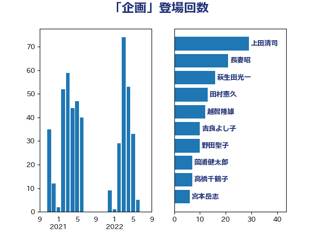

単語「企画」

| 上田清司 | 国民民主党 | 29 回 |
| 長妻昭 | 立憲民主党 | 21 回 |
| 萩生田光一 | 自由民主党 | 16 回 |
| 田村憲久 | 自由民主党 | 13 回 |
| 越智隆雄 | 自由民主党 | 12 回 |
| 吉良よし子 | 日本共産党 | 10 回 |
| 野田聖子 | 自由民主党 | 10 回 |
| 薗浦健太郎 | 自由民主党 | 7 回 |
| 高橋千鶴子 | 日本共産党 | 7 回 |
| 宮本岳志 | 日本共産党 | 6 回 |
| 木原誠二 | 自由民主党 | 6 回 |
| 源馬謙太郎 | 立憲民主党 | 6 回 |
| 山口壯 | 自由民主党 | 5 回 |
| 平井卓也 | 自由民主党 | 5 回 |
| 末松信介 | 自由民主党 | 5 回 |
| 豊田俊郎 | 自由民主党 | 5 回 |
| 赤羽一嘉 | 公明党 | 5 回 |
| 吉川ゆうみ | 自由民主党 | 4 回 |
| 平山佐知子 | 無所属 | 4 回 |
| 浮島智子 | 公明党 | 4 回 |
| 田村貴昭 | 日本共産党 | 4 回 |
| 伊藤孝恵 | 国民民主党 | 3 回 |
| 伊藤岳 | 日本共産党 | 3 回 |
| 大西健介 | 立憲民主党 | 3 回 |
| 岸信夫 | 自由民主党 | 3 回 |
| 根本匠 | 自由民主党 | 3 回 |
| 梶山弘志 | 自由民主党 | 3 回 |
| 田村まみ | 国民民主党 | 3 回 |
| 穀田恵二 | 日本共産党 | 3 回 |
| 義家弘介 | 自由民主党 | 3 回 |
| 近藤昭一 | 立憲民主党 | 3 回 |
| 金田勝年 | 自由民主党 | 3 回 |
| あかま二郎 | 自由民主党 | 2 回 |
| 古川元久 | 国民民主党 | 2 回 |
| 吉田とも代 | 日本維新の会 | 2 回 |
| 大串博志 | 立憲民主党 | 2 回 |
| 岩本剛人 | 自由民主党 | 2 回 |
| 岸真紀子 | 立憲民主党 | 2 回 |
| 後藤祐一 | 立憲民主党 | 2 回 |
| 本田顕子 | 自由民主党 | 2 回 |
| 柴田巧 | 日本維新の会 | 2 回 |
| 武田良太 | 自由民主党 | 2 回 |
| 津島淳 | 自由民主党 | 2 回 |
| 浜田聡 | NHK党 | 2 回 |
| 熊谷裕人 | 立憲民主党 | 2 回 |
| 石川大我 | 立憲民主党 | 2 回 |
| 福島伸享 | 無所属 | 2 回 |
| 舩後靖彦 | れいわ新選組 | 2 回 |
| 若宮健嗣 | 自由民主党 | 2 回 |
| 若松謙維 | 公明党 | 2 回 |
| 近藤和也 | 立憲民主党 | 2 回 |
| 金城泰邦 | 公明党 | 2 回 |
| 金子恭之 | 自由民主党 | 2 回 |
| 関芳弘 | 自由民主党 | 2 回 |
| 阿部知子 | 立憲民主党 | 2 回 |
| 須藤元気 | 無所属 | 2 回 |
| 高橋光男 | 公明党 | 2 回 |
| ながえ孝子 | 無所属 | 1 回 |
| 一谷勇一郎 | 日本維新の会 | 1 回 |
| 上川陽子 | 自由民主党 | 1 回 |
| 上野賢一郎 | 自由民主党 | 1 回 |
| 中川康洋 | 公明党 | 1 回 |
| 中川郁子 | 自由民主党 | 1 回 |
| 伊波洋一 | 無所属 | 1 回 |
| 伊藤俊輔 | 立憲民主党 | 1 回 |
| 伊藤孝江 | 公明党 | 1 回 |
| 伊藤達也 | 自由民主党 | 1 回 |
| 伴野豊 | 立憲民主党 | 1 回 |
| 佐藤信秋 | 自由民主党 | 1 回 |
| 佐藤正久 | 自由民主党 | 1 回 |
| 古賀之士 | 立憲民主党 | 1 回 |
| 吉川赳 | 無所属 | 1 回 |
| 和田義明 | 自由民主党 | 1 回 |
| 嘉田由紀子 | 無所属 | 1 回 |
| 土屋品子 | 自由民主党 | 1 回 |
| 城内実 | 自由民主党 | 1 回 |
| 堤かなめ | 立憲民主党 | 1 回 |
| 塩川鉄也 | 日本共産党 | 1 回 |
| 大岡敏孝 | 自由民主党 | 1 回 |
| 奥野総一郎 | 立憲民主党 | 1 回 |
| 安達澄 | 無所属 | 1 回 |
| 小山展弘 | 立憲民主党 | 1 回 |
| 小池晃 | 日本共産党 | 1 回 |
| 尾崎正直 | 自由民主党 | 1 回 |
| 尾身朝子 | 自由民主党 | 1 回 |
| 山下芳生 | 日本共産党 | 1 回 |
| 山岡達丸 | 立憲民主党 | 1 回 |
| 岡本あき子 | 立憲民主党 | 1 回 |
| 川合孝典 | 国民民主党 | 1 回 |
| 川田龍平 | 立憲民主党 | 1 回 |
| 斉藤鉄夫 | 公明党 | 1 回 |
| 斎藤嘉隆 | 立憲民主党 | 1 回 |
| 新垣邦男 | 立憲民主党 | 1 回 |
| 有村治子 | 自由民主党 | 1 回 |
| 木村英子 | れいわ新選組 | 1 回 |
| 杉尾秀哉 | 立憲民主党 | 1 回 |
| 松山政司 | 自由民主党 | 1 回 |
| 松川るい | 自由民主党 | 1 回 |
| 松野博一 | 自由民主党 | 1 回 |
| 林芳正 | 自由民主党 | 1 回 |
| 梅村みずほ | 日本維新の会 | 1 回 |
| 森まさこ | 自由民主党 | 1 回 |
| 浅川義治 | 日本維新の会 | 1 回 |
| 浜地雅一 | 公明党 | 1 回 |
| 浦野靖人 | 日本維新の会 | 1 回 |
| 熊田裕通 | 自由民主党 | 1 回 |
| 牧島かれん | 自由民主党 | 1 回 |
| 玄葉光一郎 | 立憲民主党 | 1 回 |
| 田島麻衣子 | 立憲民主党 | 1 回 |
| 礒崎哲史 | 国民民主党 | 1 回 |
| 神田潤一 | 自由民主党 | 1 回 |
| 福島みずほ | 社会民主党 | 1 回 |
| 福田昭夫 | 立憲民主党 | 1 回 |
| 稲富修二 | 立憲民主党 | 1 回 |
| 紙智子 | 日本共産党 | 1 回 |
| 細田健一 | 自由民主党 | 1 回 |
| 美延映夫 | 日本維新の会 | 1 回 |
| 茂木敏充 | 自由民主党 | 1 回 |
| 蓮舫 | 立憲民主党 | 1 回 |
| 藤田文武 | 日本維新の会 | 1 回 |
| 谷合正明 | 公明党 | 1 回 |
| 赤嶺政賢 | 日本共産党 | 1 回 |
| 赤池誠章 | 自由民主党 | 1 回 |
| 足立康史 | 日本維新の会 | 1 回 |
| 進藤金日子 | 自由民主党 | 1 回 |
| 遠藤利明 | 自由民主党 | 1 回 |
| 遠藤良太 | 日本維新の会 | 1 回 |
| 金子俊平 | 自由民主党 | 1 回 |
| 長峯誠 | 自由民主党 | 1 回 |
| 階猛 | 立憲民主党 | 1 回 |
| 青柳仁士 | 日本維新の会 | 1 回 |
| 高野光二郎 | 自由民主党 | 1 回 |
| 鳩山二郎 | 自由民主党 | 1 回 |